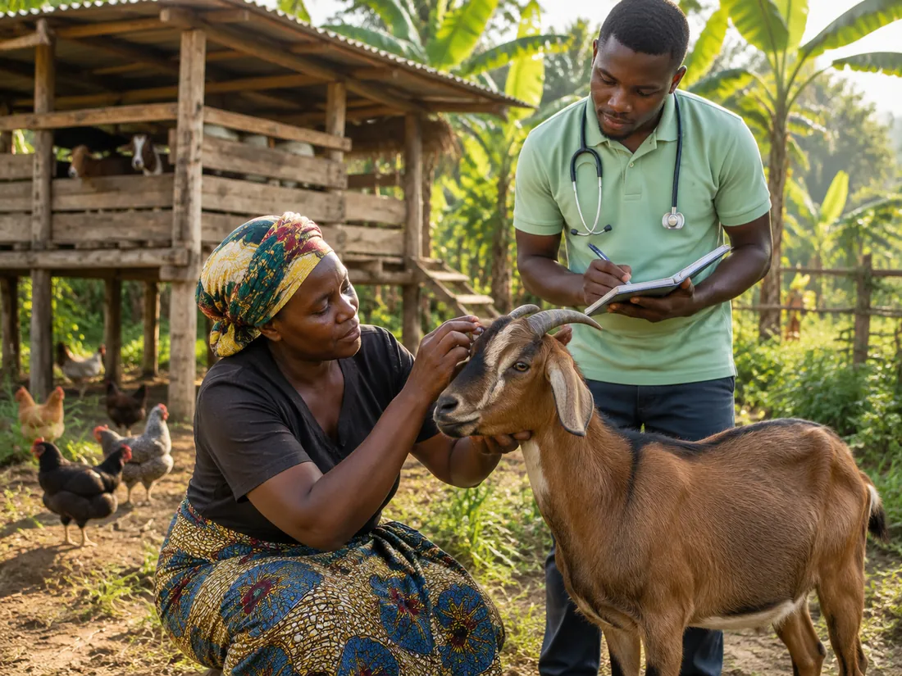

Conseils vétérinaires
Les bons gestes, avant la maladie
Vaccins, parasites, eau, logement : des conseils concrets pour garder vos animaux en bonne santé, espèce par espèce.
- 0
- conseils pratiques
- 0
- espèces couvertes
- 0
- thèmes de prévention

L’essentiel
Cinq réflexes pour tous les animaux
Quel que soit votre élevage, ces gestes simples évitent la plupart des maladies.
- Observer chaque jourAppétit, respiration, crottes : repérez ce qui change.
- Eau propre à volontéChangée chaque jour, dans un abreuvoir lavé.
- Vacciner à tempsNewcastle, PPR, rage : suivez le calendrier du vétérinaire.
- Isoler les maladesEt mettre en quarantaine tout nouvel animal.
- Garder les abris secsL’humidité nourrit microbes et parasites.
Bibliothèque
Tous les conseils
Choisir un animal
Thème et recherche
Contenu éducatif : il ne remplace pas l’avis d’un vétérinaire. Pour tout traitement, demandez toujours une prescription.